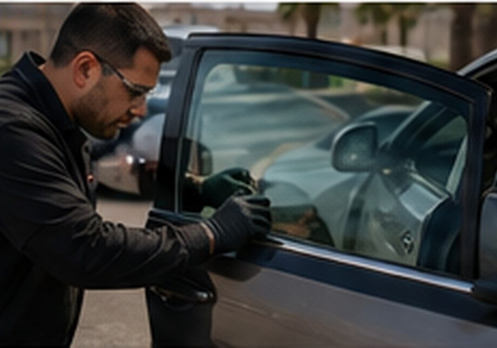
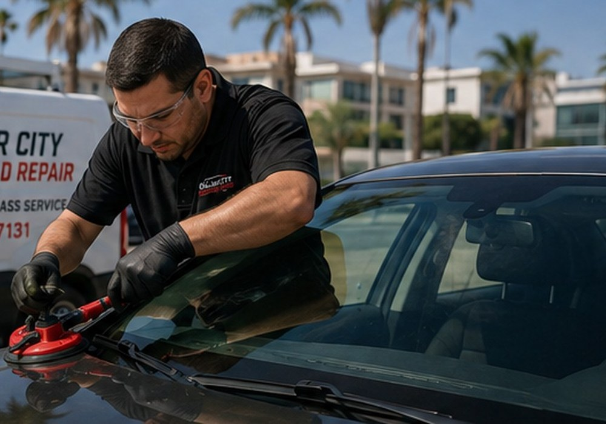
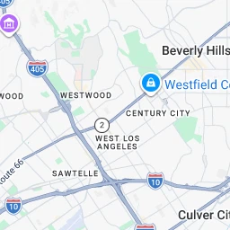

Windshield Replacement
Professional windshield replacement for damaged or shattered windshields.
- Mobile service
- Quality glass options
- Installation by a technician
Professional windshield and vehicle glass replacement services with mobile convenience for Westwood, Mid City, Culver City, and surrounding areas.
We focus on practical, professional replacement service for damaged vehicle glass.
Professional windshield replacement for damaged or shattered windshields.

Replacement of side, rear, quarter and other vehicle glass.

Ask about convenient mobile service at your home or workplace.

Auto Glass ReplacementOur goal is to make auto glass replacement as convenient as possible. Tell us what happened, provide your vehicle information, and we can help you determine the next step.
For windshield replacement, drive-away and curing time can vary with the adhesive, vehicle, and weather conditions. Your technician can provide specific instructions after installation.

Professional WorkmanshipCulver City Windshield Repair serves customers who need windshield replacement and auto glass replacement without the hassle of a traditional shop visit.
We provide service information over the phone, discuss scheduling, and bring the necessary equipment when mobile service is available for your vehicle and location.
CALL US TODAYCall to confirm service availability for your exact location.

Call Culver City Windshield Repair for a fast quote and convenient mobile service.